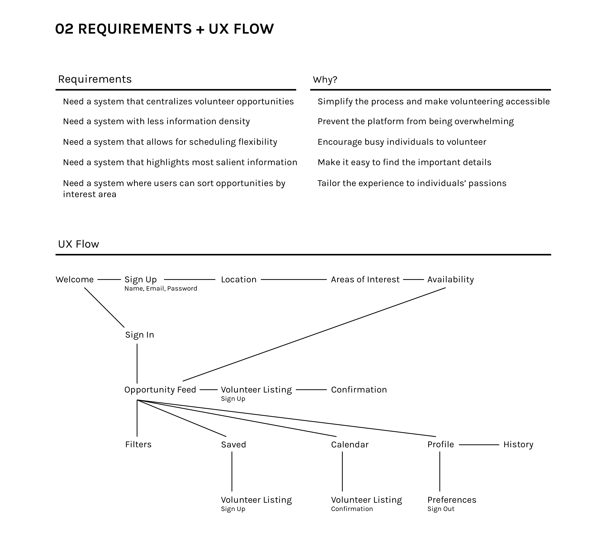
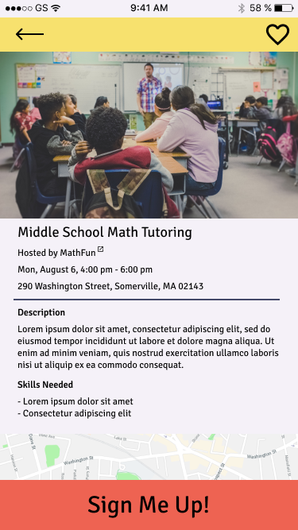

Connect: Volunteering Made Simple
Empowering individuals to discover impactful volunteer opportunities
Introducing Connect -- a mobile app that connects people with volunteer opportunities they're excited about in an easy-to-use platform. Connect simplifies the process of searching for volunteering experiences by tailoring suggestions to the user's interests and preferences.
While surveying other volunteer apps, it became clear that there currently is not an app focused on the Northeastern region of the United States. Connect aims to provide a clearer user experience and to start out by servicing the Northeastern U.S.
This case study focuses on the user experience for individuals in search of volunteering opportunities.


